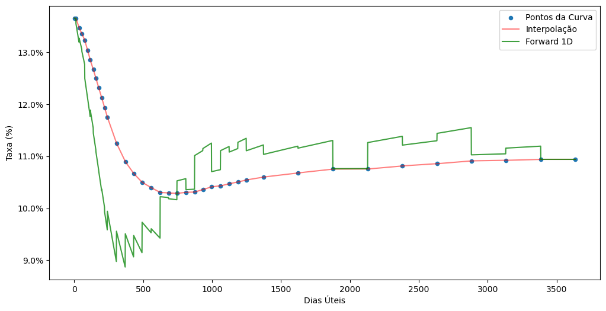
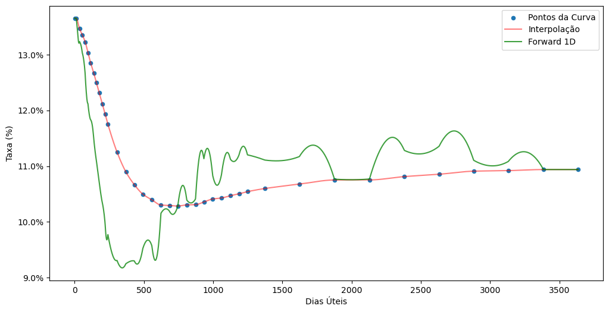

import os
os.environ["BRASA_DATA_PATH"] = "D:\\brasa"
import brasa
import pyarrow.compute as pc
from datetime import datetime
import QuantLib as ql
import numpy as np
import pandas as pd
import matplotlib.ticker as mtickerNo post vimos a criação de uma curva de juros utilizando a classe ql.DiscountCurve da QuantLib, que utiliza uma estrutura a termo dos fatores de desconto. Aqui vamos ver como criar uma curva zero a partir das taxas de juros. Nesta abordagem é possível criar curvas com outros tipos de interpolação, pois, na DiscountCurve a interpolação utilizada é a linear nos logs dos fatores de desconto, que é equivalente a interpolação exponencial. A interpolação exponencial é muito utilizada no mercado brasileiro, em particular para a curva de juros prefixados. Neste post veremos a classe ql.ZeroCurve para construção de uma curva zero, que é uma curva de taxas de juros que vão da data de referência até o vértice da curva. Veremos também como utilizar diferentes métodos de interpolação para a curva criada.
Vamos começar carragendo os pacotes utilizados e fazendo o setup do brasa.
Agora faremos o setup da QuantLib definindo a data de referência, que será 2023-07-14.
today = ql.Date().from_date(datetime(2023, 7, 14))
ql.Settings.instance().evaluationDate = todayA curva prefixada para a data de referência é carregada do dataset b3-curves-di1 do datalake do projeto brasa.
curve = (brasa
.get_dataset("b3-curves-di1")
.filter(pc.field("refdate") == today.to_date())
.to_table()
.to_pandas())Para criar uma curva zero é necessário passar um vetor com as datas dos vértices da curva e as taxas de juros da curva. Adicionalmente, é preciso incluir um vértice referente à data de referência. Isso é importante, caso contrário a QuantLib assume que a data de referência da curva é a data do primeiro ponto da curva e na interpolação a contagem de dias será realizada com relação à este ponto. A taxa definida para este vértice inicial é 0 (zero), mantendo a coerência, pois para prazo de zero dias temos zero juros, apesar dessa definição ser redundante.
Utilizando os dias úteis e a taxa de juros da curva carregada previamente, construo os vetores de datas e taxas.
calendar = ql.Brazil(ql.Brazil.Settlement)
data = [(calendar.advance(today, d, ql.Days, ql.Following), r)
for d, r in zip(curve["business_days"], curve["adjusted_tax"])]
data.insert(0, (today, 0))
dates, rates = zip(*data)Para a criação da curva precisamos passar alguns argumentos para o construtor ql.ZeroCurve, que são importantes e impactam na interpretação das taxas e interpolação da curva. Seguem os argumentos utilizados:
- regra de contagem de dias:
ql.Business252(calendar) - calendário:
ql.Brazil(ql.Brazil.Settlement) - interpolador:
ql.Linear - regime de capitalização das taxas:
ql.Compounded - frequência das taxas:
ql.Annual
zc = ql.ZeroCurve(dates, rates,
ql.Business252(calendar),
calendar,
ql.Linear(),
ql.Compounded,
ql.Annual)Vamos ver algumas características interessantes da curva criada.
A curva tem um método nodes que retorna as datas e taxas da curva, mas atenção, as taxas retornadas são taxas contínuas. Internamente a QuantLib armazena taxas contínuas, mesmo que tenham sido utilizadas taxas discretas ou simples, para armazenamento na classe as taxas são convertidas.
zc.nodes()[:5]((Date(14,7,2023), 0.12795336431048324),
(Date(17,7,2023), 0.12795336431046694),
(Date(1,8,2023), 0.12794507014909243),
(Date(1,9,2023), 0.1263153339122755),
(Date(2,10,2023), 0.12534533483937893))curve.head()| refdate | symbol | maturity_date | business_days | adjusted_tax | |
|---|---|---|---|---|---|
| 0 | 2023-07-14 | CDI | 2023-07-17 | 1 | 0.136500 |
| 1 | 2023-07-14 | DI1Q23 | 2023-08-01 | 12 | 0.136491 |
| 2 | 2023-07-14 | DI1U23 | 2023-09-01 | 35 | 0.134640 |
| 3 | 2023-07-14 | DI1V23 | 2023-10-01 | 55 | 0.133540 |
| 4 | 2023-07-14 | DI1X23 | 2023-11-01 | 76 | 0.132250 |
Como podemos observar, as taxas apresentadas em nodes são diferentes das taxas da tabela acima.
Agora que temos a curva criada, podemos interpolar utilizando o método zeroRate.
biz_days = calendar.businessDaysBetween(today, ql.Date(1,9,2023))
print(zc.zeroRate(biz_days/252, ql.Compounded))
print(zc.zeroRate(ql.Date(1,9,2023), ql.Business252(calendar), ql.Compounded))13.463990 % Business/252(Brazil) Annual compounding
13.463990 % Business/252(Brazil) Annual compoundingNote que passamos o regime de capitalização, ql.Compounded, isso é necessário porque, a QuantLib retorna taxas contínuas por padrão.
Abaixo segue uma função para fazer gráficos da curva que utiliza a curva criada e os pontos originais. Isso ajuda na validação da curva.
def plot_curve(crv, curve):
i_curve = pd.DataFrame({
"days": list(range(1, curve["business_days"].max())),
"rates": [crv.zeroRate(i/252, ql.Compounded).rate()
for i in range(1, curve["business_days"].max())],
})
f_curve = pd.DataFrame({
"days": list(range(1, curve["business_days"].max())),
"rates": [crv.forwardRate(i/252, (i+1)/252, ql.Compounded).rate()
for i in list(range(1, curve["business_days"].max()))],
})
ax = curve.plot.scatter(x="business_days", y="adjusted_tax", figsize=(12, 6),
label="Pontos da Curva")
i_curve.plot(x="days", y="rates", c="red", alpha=0.5, ax=ax, label="Interpolação")
f_curve.plot(x="days", y="rates", c="green", alpha=0.75, ax=ax, label="Forward 1D")
ax.set_xlabel("Dias Úteis")
ax.set_ylabel("Taxa (%)")
ax.yaxis.set_major_formatter(mticker.PercentFormatter(xmax=1.0, decimals=1));Abaixo temos o gráfico com os pontos da curva prefixada, a interpolação e a curva de juros a termo de 1 dia. Como a curva foi criada com o método de interpolação linear, na curva de juros a termo isso fica evidente no formato errático, com zigue-zagues da curva. Para a curva prefixada, em particular, essa abordagem não faz sentido, pois sabemos que as decisões de mudança de juros acontece em datas específicas e as taxas a termos devem refletir isso.
plot_curve(zc, curve)
A título de curiosidade, e também para explorar a QuantLib, uma nova curva zero é criada com outro método de interpolação, o cubic spline monotônico. Abaixo temos a criação da curva e o gráfico com os pontos da curva prefixada, a interpolação e a curva de juros a termo de 1 dia.
czc = ql.MonotonicCubicZeroCurve(dates, rates, ql.Business252(calendar), calendar,
ql.MonotonicCubic(), ql.Compounded, ql.Annual)
plot_curve(czc, curve)